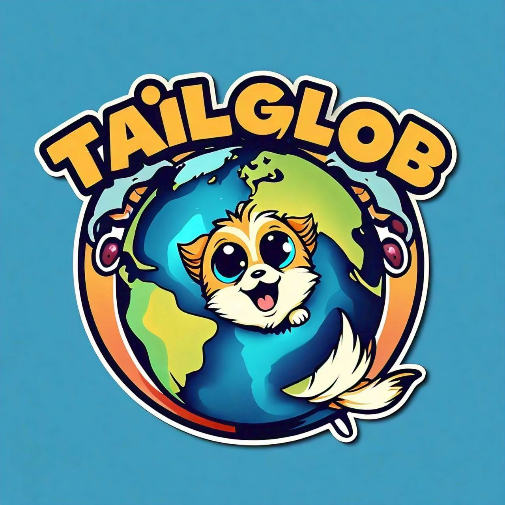

Welcome to my views
"The idea of 'Tail Globe' comes from the thought that the Earth we live on now was once home to many different creatures, some of which we see today and some we don't. Many species have faced extinction without our awareness. Therefore, if we can talk about and love the living beings around us, it can bring a significant change to nature and our lifestyle. I believe that the change we experience by raising a pet is substantial, and this belief is the foundation of this application."
The thought behind the project and how use full to all

"Through the Tail Globe app, you can find and sell your favorite pets. You can see the pets you like in person and buy them if you wish. You can also purchase food, medications, and grooming supplies needed for your pets. Additionally, the app will feature a pets gallery where you can upload photos and videos of your pet. If your pets fall ill, you can search for a good hospital and maintain a good contact through our app. Tail Globe will always be there to help keep your pets safe."